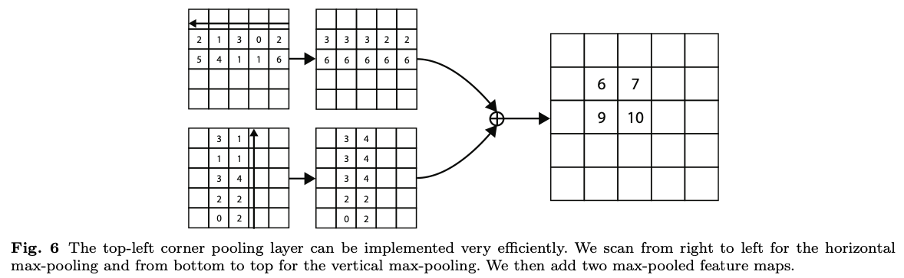

- Advanced Object Detection
Advanced Object Detection
Casecade RCNN
Contribution
Faster RCNN
RPN을 사용한 최초의 End to End network
IoU 0.7 이상을 positive, 0.3 이하를 negative로 훈련시켰다
그 후, 0.5를 기준으로 True / False를 판별하여 성능을 측정했다
→ 왜 0.5로 했는가? 0.6이면 어떻게 변화하는가? 에 대한 고찰이 없었다
Casecade RCNN
Faster RCNN에서 하지 않았던 고찰들을 실험을 통해 명확히 하였음
또한 실험 결과를 기반으로 새로운 모델을 제시, 성능 향상을 이뤄냄
Method
Cascade R-CNN: Delving into High Quality Object Detection
In object detection, an intersection over union (IoU) threshold is required to define positives and negatives.
https://arxiv.org/abs/1712.00726

input iou : RPN의 결과 값으로 그린 bbox와 GT 간의 IOU
output iou : box-head를 통과한 최종 bbox와 GT 간의 IOU
훈련에서 사용한 iou 기준이 높을수록, rpn이 bbox를 잘 예측했을 때(input iou가 클수록) box-head를 통과한 최종 bbox 예측 성능(output iou)도 좋아짐
그러나, rpn이 iou를 잘 예측하지 못한다면, 낮은 iou threshold로 훈련하는 것이 더 좋은 성능을 보여준다는 것을 알 수 있다
나아가서 detection 성능 또한 0.5로 훈련시킨 것이 전반적으로 좋은 map를 얻을 수 있는 것을 실험적으로 증명했다
→ high quality detection이 필요하다면, 높은 iou 기준으로 훈련 및 높은 iou threshold로 분류(map 기준에서 성능 하락)
→ low quality detection이 필요하다면, 낮은 iou 기준으로 훈련 및 낮은 Iou threshold로 분류
선행연구(interactive bbox at inference, integral loss)는 약간의 성능 향상이 있었음
그러나 이를 조합한다면(Casecade R-CNN), 더 큰 성능 향상을 얻을 수 있었음
Deformable Convolution Networks(DCN)
Contribution
CNN의 문제
CNN은 Geometric Transformation들에 한계를 지님
기존 해결방법
Geometric augmentation을 수행
하지만, 그러므로 휴리스틱하게 사람이 넣어준 augmentation에 대해서만 학습을 수행하므로 사람이 잘 넣어줘야 함
Deformable Convolution
task에 따라 CNN을 변형시켜서 학습
Method
Deformable Convolutional Networks
Convolutional neural networks (CNNs) are inherently limited to model geometric transformations due to the fixed geometric structures in its building modules.
https://arxiv.org/abs/1703.06211
DCN
(Deformable Convolutional Networks) Convolutional neural networks (CNNs) are inherently limited to model geometric transformations due to the fixed geometric structures in their building modules.
https://jjeamin.github.io/posts/DCN/
Deformable Convolution
기존 kernel size를 유지한 체, 각 sampling position에 대한 offset을 파라미터에 추가한다
CNN을 통해 Offset Field R을 생성하고, R을 참조하여 Conv 시 Sampling Position을 결정한다 offset은 아주 작은 값이기 때문에 소수점이 될 수 있고, 이 경우 bilinear 보간을 통해 값을 얻는다
offset filed는 왜 2N일까?
이미지 공간은 2차원이으로 offset을 표현하기 위해서는 dx, dy가 필요하다 즉, Offset Filed R의 크기가 N이라면, 사실 2N의 크기가 필요하다
Faster R-CNN등에서는 큰 성능 향상이 없었다 그러나 DeepLab 등의 segmantation task에서는 큰 성능향상이 있다
Object detection, Segmentation에서 좋은 효과를 보인다
ViT
An Image is Worth 16x16 Words: Transformers for Image Recognition at Scale
While the Transformer architecture has become the de-facto standard for natural language processing tasks, its applications to computer vision remain limited.
https://arxiv.org/abs/2010.11929
NLP에서 long range dependanc를 해결
vision에 적용한 case가 ViT
이전에 학습한 내용과 크게 상이하지 않으므로 생략
End to End Object Detection with Transformer
End-to-End Object Detection with Transformers
We present a new method that views object detection as a direct set prediction problem.
https://arxiv.org/abs/2005.12872
Contibution
Trainsformer를 처음으로 Object Detection에 적용
기존의 Object Detection의 Hand-Crafted post process 단계(ex: NMS)를 Transformer를 사용해 없앰
Architecture
CNN을 backbone으로 feature map 추출, 지정한 개수 만큼 transformer를 사용해서 bbox 생성
Transformer 특성상 많은 연산이 필요하기 때문에, Highest level feature map을 사용해서 입력을 감소시킴
decoder를 통과한 결과 값을 Feed forward network를 통과시켜 bbox를 얻음
decoder 1개당 1개의 ffn과 1개의 bbox 및 class 예측을 수행하기 때문에 이미지에 존재하는 오브젝트의 총 개수보다 디코더 개수가 많아야 함
Swin Transformer
Swin Transformer: Hierarchical Vision Transformer using Shifted Windows
This paper presents a new vision Transformer, called Swin Transformer, that capably serves as a general-purpose backbone for computer vision.
https://arxiv.org/abs/2103.14030
VIT의 문제점
많은 양의 data 학습 필요
transformer 특성상 computational const가 큼
일반적인 backbone으로 사용이 어려움
Contibution
CNN과 유사 구조로 설계
Window라는 개념을 활용하여 cost 감소
Architecture
-
Patch Partitioning(이미지를 patch 크기로 나눔)
-
Linear Embeding(Detection task를 목적으로 하기 때문에 CLS Token 없음)
-
Swin Transformer Block
-
Window Multi-head self attention
-
Shifted window Multi-head attention
-
-
Patch Merging
매우 큰 성능 향상
적은 data에도 학습이 잘됨
window단위로 computation cost 감소
cnn과 비슷한 구조로 object detction backbone으로 사용 가능
YOLO v4
Overview
Contribution
하나의 GPU에서 훈련할 수 있는 빠르고 정확한 Object detector
BOF(Bag of Freebies), BOS방법들을 실험을 통해서 증명하고 조합을 찾음
- BOF : Inference 비용을 늘리지 안호 정확도를 향상시키는 방법
- BOS : Inference 비용을 조금 높이지만 정확도가 크게 향상되는 방법
GPU 학습에 더 효율적이고 적합하도록 방법들을 변형
Related work
Bag of freebies
-
Data augmentation
- Photometric Distortions
- Geometric Distortions
- CutOut
- Random Erase
- MixUp
- CutMix
- GAN
-
Semantic Distribution Bias(Dataset 불균형을 해결하기 위한 방법)
- Hard Negative Mining
- 어려운 배경을 강제로 batch에 많이 포함시킴
- OHEM
- Focal Loss
- Label Smoothing
- 0→0.1 , 1→ 0.9로 smoothing
- 잘못된 label이 많을 경우, 효과적
- overfitting을 막아주고 regularization 효과 기대
- Hard Negative Mining
-
Bounding Box Regression
-
MSE
- GT 와 bbox의 거리에 대한 loss, 허나 iou 오차를 대변하지 못하기 때문에 iou관련 loss를 추가로 사용
-
GIOU
-
DIoU
-
CIoU
-
Bag of specials
- Enhancement of Receptive field
- SPP(Spatial Pyramid Pooling)
- ASPP(Atrous SPP)
- RFB(Receptive field block)
- Attension mudle
- SE(Squeeze and excitation)
- SAM(spatial attension module)
- Feature integration(=Neck)
- FPN(Feature Pyramid network)
- SFPM(Scale-wise feature aggregation module)
- ASFF(Adaptively spatial feature)
- BiFPN
- Activation Function
- ReLU
- Leaky ReLU
- Parametric ReLU
- ReLU6
- Swish / Mish
- 약간의 음수를 허용하기 때문에 ReLU의 zero bound 보다 gradient흐름에 좋은 영향
- 모든 구간 미분 가능
- Post-processing method
- NMS(Non maximum suppression)
- Soft NMS
- DIoU NMS
Selection of architecture
YOLOv4: Optimal Speed and Accuracy of Object Detection
There are a huge number of features which are said to improve Convolutional Neural Network (CNN) accuracy.
https://arxiv.org/abs/2004.10934
-
기존 Yolo Architecture에 CSPNet을 추가
CSPNet(Cross Stage Partial Network)
-
정확도 유지 + 경량화
-
메모리 cost 감소
-
다양한 backbone에서 사용 가능
-
연산 bottleneck 제거
-
기존 DenseNet의 문제
-
가중치 업데이트 시, gradient 정보를 재사용하게 됨
CSPNet: A New Backbone that can Enhance Learning Capability of CNN
Neural networks have enabled state-of-the-art approaches to achieve incredible results on computer vision tasks such as object detection.
https://arxiv.org/abs/1911.11929 -
-
모든 feature map을 사용하는 방식에서 일부 feature map을 사용하는 방식으로 변경
Additional Improvements
- New data augmentation
- Mosaic
- 4장의 이미지를 합처버림
- SAT(Self-Adversarial Training)
- 모델의 오검출을 유도
- Mosaic
- 기존 방법 변형
- modified SAM
- modified PAN
- CmBN(Cross mini-batch normalization)
M2Det
M2Det: A Single-Shot Object Detector based on Multi-Level Feature Pyramid Network
Feature pyramids are widely exploited by both the state-of-the-art one-stage object detectors (e.
https://arxiv.org/abs/1811.04533
Overview
Background
물체에 대한 scale 변화는 object detection의 과제
-
Image Pyramid
-
Feature Pyramid(Neck의 기본 구조)
Feature Pyramid의 한계점
- backbone으로부터 feature pyramid 구성
- Classification task를 위해 설계된 backbone은 object detection task를 수행하기에 충분하지 않음
- backbone network는 single-level layer로, singe-level 정보만을 나타냄
- 일반적으로, low-level feature는 간단한 외형을, high-level feature는 복잡한 외형을 나타내는 것에 적합
Architecture
- MLFPN(Multi-level, multi-scale feature pyramid) 제안
- SSD에 합쳐서 M2Det이라는 One Stage Detector 제안
Overall archtecture
Unet 구조의 TUM을 통과시키고 나온 Feature Map에서 가장 큰 FeatureMap(마지막 Featrue map)을 가져와 FFMv2 연산으로 concat하는 것을 반복
이후, Level별 Multi-scale Feature Map을 SFAM을 사용해 scale 별로 concat
마지막으로 Prediction Layers를 통과
FFM(Feature Fusion Module)
서로 다른 scale의 2 feature map
FFMv1 : 서로 다른 scale의 두 feature map을 channel wise로 conca해서 Base feature 생성(서로 다른 scale의 2 feature map을 합쳐 semantic 정보가 풍부)
FFMv2 : FFMv1 결과에 추가로 TUM의 가장 큰 feature map을 concat
TUM(Thinned U-shape Module)
Encoder-decoder 구조
구조상, 가장 마지막 feature map(디코더 출력)은 U Shape의 구조상 다른 scale의 feature map들의 정보가 모두 반영되어 있으므로 Multi-scale feature map으로 볼 수 있다
SFAM(Scale-wise Feature Aggregation Module)
동일 크기를 가진 feature map끼리 concat
각각의 scale의 feature들은 multi-level 정보를 포함
Scale-wise로 concat된 블록들은 SE block을 통해 추가적으로 가중치를 조절하고(채널 별 중요도 조정) SSD에 입력(이미 multi scale feature map이 있기 때문에, SSD Header 연산만을 사용)
CornerNet
CornerNet: Detecting Objects as Paired Keypoints
We propose CornerNet, a new approach to object detection where we detect an object bounding box as a pair of keypoints, the top-left corner and the bottom-right corner, using a single convolution neural network.
https://arxiv.org/abs/1808.01244
Overview
Anchor box의 단점
Anchor box의 수가 너무 많음(feature map의 각 pixel마다 n개의 anchor box가 생성됨)
- Positive Sample(객체)가 적고, 대부분이 Negative Sampe(배경)임
- Class Imbalance가 존재
Anchor box를 사용할 때, 하이퍼 파라미터를 고려해야 함
- Anchor box 개수, 사이즈, 비율
CornerNet
Anchor box가 없는 1stage detector
Center가 아닌 Corner를 사용하는 이유
- 중심점을 잡게 되면 4개의 면을 모두 고려해야 하는 반면, corner를 사용하면 2개만 고려할 수 있음
Architecture
Hourglass를 사용해서 feature map을 생성
Hourgalss
Human pose estimation task에서 사용
Global, Local 정보 모두 추출 가능
Encoder(Feature 추출)-Decoder(Reconstruct) 구조
Prediction Module
2개의 Prediction Module을 사용
- Top-Left 담당 모듈
- Bottom-Right 담당 모듈
결과
- Heatmaps
- Embeddings
- Offsets
두 heatmap을 통해서 예측
H x W x C(number of category)로 구성
Corner loss의 경우, focal loss를 변형해서 사용
정답에 가까울 수록 적은 loss 적용
Detecting Corner
- Conv를 통과하면서 heatmap에 floating point loss 발생
- Heatmap에서 이미지로 위치를 다시 mapping 시킬 때 차이 발생
- Offset을 사용하여 예측한 위치를 조정
- Smooth L1 Loss 사용
Grouping Corner
한 이미지 안에서 동일 클래스 오브젝트가 존재할 수 있음
- Top-Left 코너와 Bottom-Right 코너의 짝을 맞춰주는 과정
- Top-Left 코너와 Bottom-Right 코너의 임베딩값 차이에 따라서 그룹을 지어줌
- Embedding 값 사이의 거리가 작으면 같은 물체의 bbox에 속한다고 가정
Corner Pooling

코너에는 특징적인 부분이 없음
코너를 결정하기 위해서 feature map에 corner pooling 수행
- Horizontal : Right to left, Horizontal max pooling
- Vertical : bottom to top Vertical max pooling
- 이후 embedding, offset 계산에도 사용